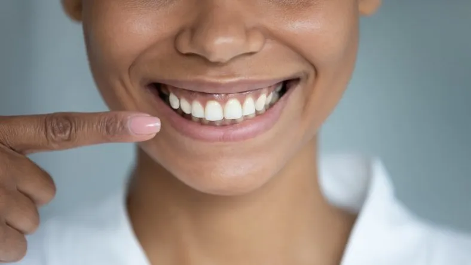

Tratamiento de Encías: Restaura la Salud y Belleza de tu Sonrisa
El tratamiento de encías es fundamental para mantener la salud bucal y prevenir enfermedades periodontales que puedan afectar la estabilidad de tus dientes y el bienestar general de tu boca. En nuestra clínica, ofrecemos una gama de tratamientos especializados diseñados para restaurar la salud de tus encías y revitalizar tu sonrisa.
Procedimientos Comunes de Tratamiento de Encías:
- Limpieza Profunda (Raspado y Alisado Radicular): Este procedimiento elimina la placa y el sarro debajo de la línea de las encías, suavizando las raíces dentales y promoviendo la curación de los tejidos periodontales.
- Cirugía de Encías: En casos más avanzados de enfermedad periodontal, podemos realizar cirugías para eliminar bolsas periodontales profundas, corregir recesiones gingivales o restaurar la forma y el contorno de las encías.
- Terapia con Antibióticos: En algunos casos, podemos recetar medicamentos antibióticos para ayudar a combatir la infección y promover la curación de las encías.
En nuestra clínica, nos comprometemos a brindar un tratamiento de encías compasivo y efectivo para cada paciente. Nuestro equipo de profesionales está dedicado a proporcionar un cuidado personalizado y de alta calidad para ayudarte a alcanzar y mantener una salud bucal óptima. No dejes que las enfermedades de las encías afecten tu sonrisa y tu bienestar general. ¡Contáctanos hoy mismo para programar una consulta y dar el primer paso hacia unas encías saludables y una sonrisa radiante!
